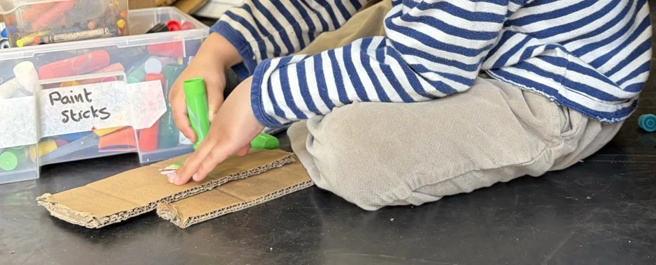
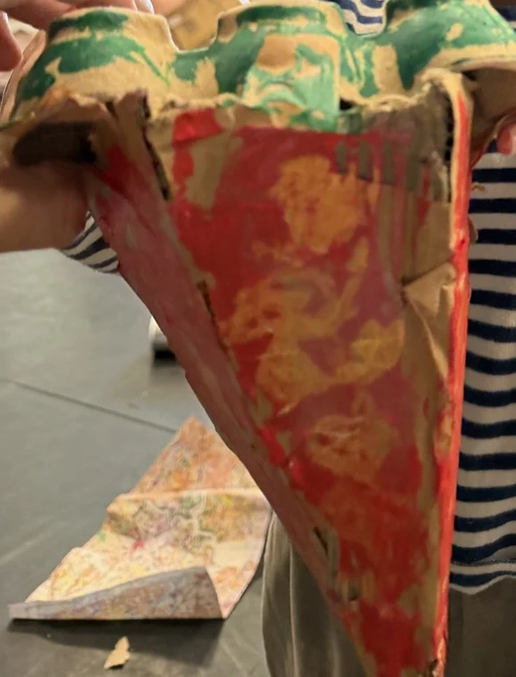
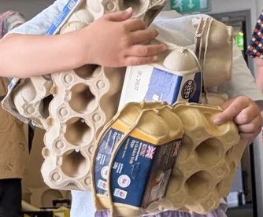
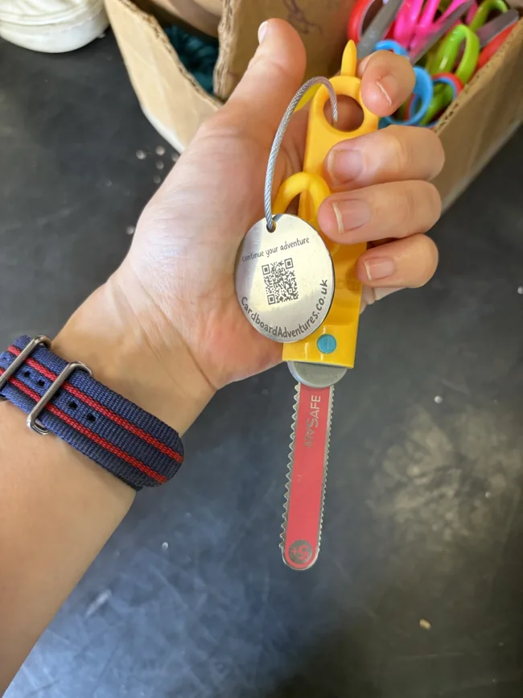

From Yewon’s notebook
Let them make it their way
Do you know what cats and children have in common? They love a good cardboard box.
When I visited the University of Nottingham, I came across a set of tools for joining bits of cardboard. The children were so excited to make something of their own. What stayed with me was how carefully they treated what they had made. It mattered to them because it was theirs.

What the children made
One of the things they made was a cardboard shark big enough for a child to climb inside. I loved how differently they used the same materials. Some pieces were painted in bright colours. In another build, the bumps and hollows of the egg boxes became part of the shape.


I sometimes wonder what making things will look like for our children as AI changes the tools we have. If more of their ideas become easier to bring to life, I hope they’ll still enjoy coming up with something of their own, figuring out what to do when it falls apart, and making room for a friend’s idea too.
A tool I wish we’d had at home
When my child tried cutting thick cardboard at home with scissors and a craft knife, the scissors slipped a few times and they hurt their hand. That’s why the little cardboard saw we saw at Nottingham caught my eye. With a tool made for cutting cardboard, a child can follow a shape they’ve drawn and do more of the making themselves.

If you’re looking for a similar tool, Makedo’s Safe-Saw has rounded teeth and is recommended by the maker for ages five and up. Start together and follow the instructions for the tool you’re using. Makedo’s tool guidance
Here are three things I’d put out on the table to give that kind of play a little room.
Cardboard and reusable connectors
Makedo is the kit I spotted. Its reusable screws join pieces of corrugated cardboard, so children can take a build apart and try another way. Holding a flap steady while turning a screw gives both hands something to do. The maker recommends ages 5+ and says four-year-olds can make with adult help. You supply the cardboard.
A tub of mixed bricks or wooden blocks
Try building a bridge for a toy animal. One child can test whether the animal fits while the other changes the height. Stacking, moving and lining up the pieces gives little fingers plenty to do, and the bridge can become something else tomorrow.
Playdough and a rolling pin
Pinch tiny pizza toppings, roll a long snake or invent an animal that has never existed. Add a pretend café and friends can take turns making and ordering. Pinching, rolling and cutting soft dough are simple ways to practise hand control.
More things an empty box could become
- A little town. Each child makes a building, then they draw roads together to join them up.
- A creature with moving parts. Use folded strips of card as hinges for flapping wings or an opening mouth.
- Something you can get inside. Try a big open box as a boat, a bus or a shark. Ask who’s on board and where they’re going.